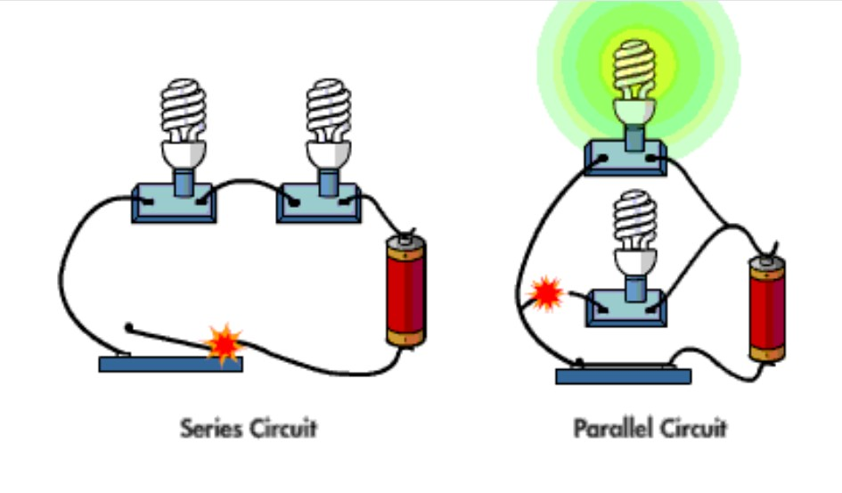
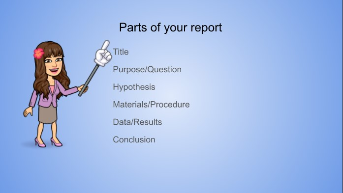

Your job is to sketch two working circuits. One should be parallel and the other a series circuit.

Static Electricity
Create your very own Electroscope. If you need help please watch the following video.Electroscope help After you have made your Electroscope use a comb and pen to test it. Then write a lab report.
